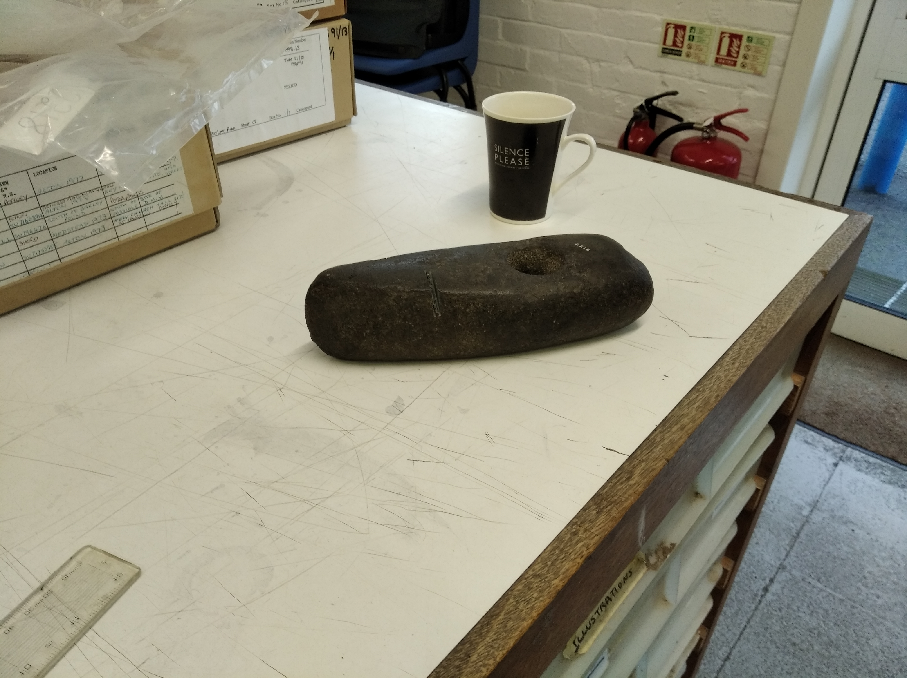

Between Arle and Wey: The Neolithic of the East Hampshire Plateau
Having grown up in the Hampshire countryside, I have been fascinated by the rich archaeology and history that surrounds me for as long as I can remember.
This lifelong fascination has evolved into my current research niche—The local Neolithic archaeology.
Much of Hampshire has remained unscathed from the trowel and spade, with very few sites from this period known in the area.
My research, beginning with one site situated in the middle of this overlooked region, aims to fill in this false negative.
The image on the left, an Early Bronze Age axe-hammer made from Camptonite (likely sourced from near Nuneaton), shows this best.
Put simply, I want to endeavor to fill the "gap" between Stonehenge and Blackpatch.